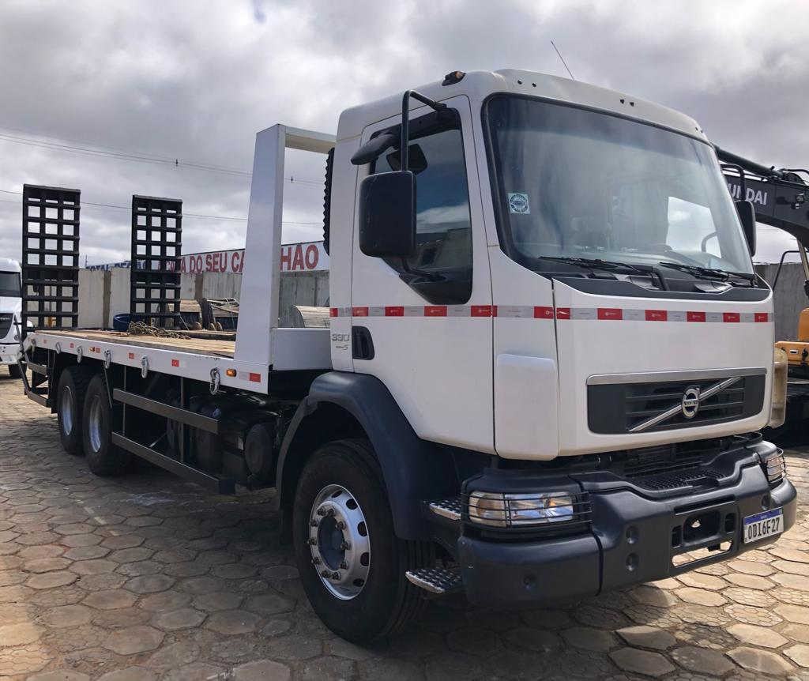
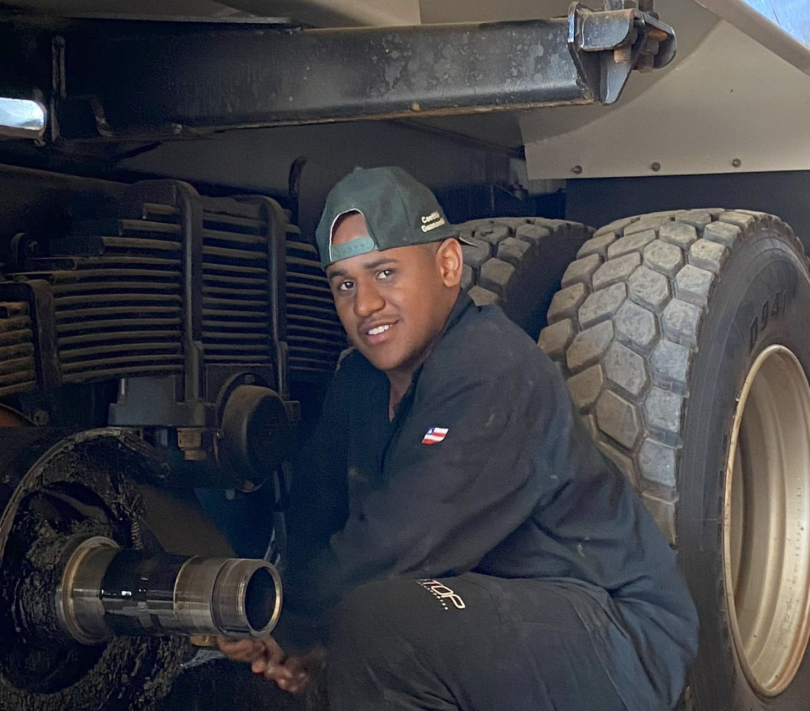

<section class="services">
  <div class="container">
    <h2>Serviços</h2>
    <div class="service-grid">
      <div class="service">
        
        <h3>Serviços Online</h3>
        <p>Foram desenvolvidos para oferecer praticidade, agilidade e eficiência aos seus clientes. Com o objetivo de facilitar a comunicação e o gerenciamento das operações de transporte.</p>
      </div>
      <div class="service">
        
        <h3>Atendimento ao Cliente</h3>
        <p>É um dos pilares fundamentais da empresa, refletindo seu compromisso com a excelência e a satisfação total de seus clientes. A empresa entende que um atendimento de qualidade é essencial para construir relacionamentos duradouros e de confiança e por isso investe continuamente em recursos e treinamento para oferecer uma experiência superior em cada interação.</p>
      </div>
      <div class="service">
        
        <h3>Nosso Time</h3>
        <p>É composto por profissionais experientes e dedicados, comprometidos com a excelência em cada projeto. Nossa equipe de atendimento ao cliente é atenciosa e prestativa, enquanto nossos engenheiros e técnicos garantem a manutenção e o conserto dos caminhões próprios e de toda frota, assegurando que os equipamentos estejam sempre em perfeito estado. Contamos ainda com operadores especializados e uma logística eficiente, que trabalham juntos para realizar os serviços com precisão, segurança e dentro dos prazos. Nosso foco é atender às necessidades dos clientes com inovação, qualidade e compromisso.</p>
      </div>
    </div>
  </div>
</section>